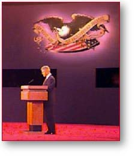

Rather than offering a clear vision for the future,
Bob Dole offered harsh attacks and a distorted picture
of President Clinton's record.
Here's a list of issue areas and the real
Clinton/Gore record. (Click on each issue for the full
record).
Economic Growth
Taxes
Medicare
Balanced Budget
Dole Tax Proposal
1993 Clinton
Budget
Tobacco
Drugs
Brady Bill
Iraq
California
Special Interest
Groups
Education
|
 |
Bo Davis — Arlington,
VA
“...the President kept his composure and stayed on the
issues”
Marty Gallanter — Tyler, MN
“...one of the more substantive Presidential debates in
history”
Theresa Kmetetz — Enfield, CT
“The President was clearly the better candidate.”
Liz Carey — Cincinnati, OH
“...President Clinton is serious about the job of being
President.”
Aaron Laws — Davis, CA
“I am proud to continue to support and endorse
President Clinton.”
Kelly Gomas — New Port Richey, FL
“Bill Clinton represents reality and Bob Dole
represents promises”
Barry House — Pittsfield, IL
“...his plan WILL take us into the 21st century on
forward-looking path. ”
Joan Seibenick — Ann Arbor, MI
“It can really be summed up in two simple words future
and past.”
Tarja Black — Los Angeles, CA
“...I listened to the debate on radio. In that medium,
President Clinton was the clear winner.”
|